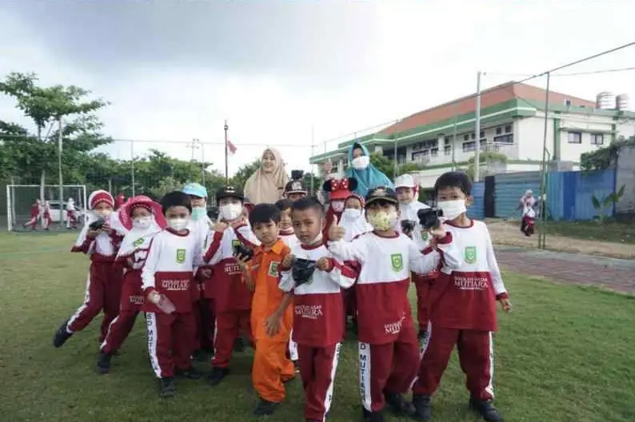
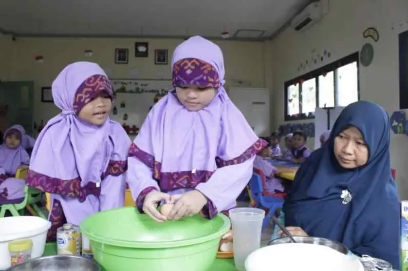
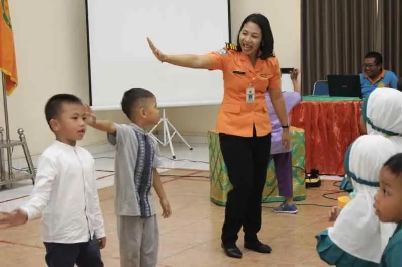
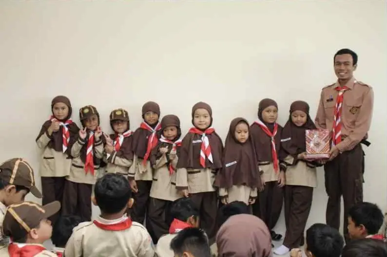
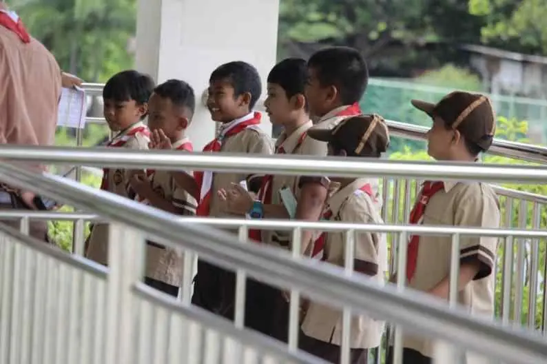

Gallery
Moments from classrooms, the library, the field and school events.











See more of our latest activities on Instagram and YouTube – links are on the Contact page.
Ready to join Mutiara School?
Message our team on WhatsApp for enrolment details, fees and school visits.
Enrol via WhatsApp